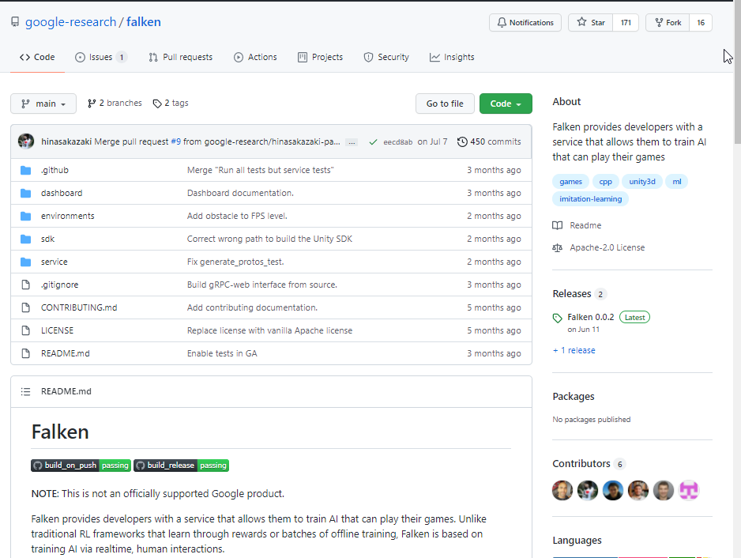

This past June, I had the unique experience of publishing a bite-sized representation of what I had been working on for a little under a year and a half to the world:
- Google AI Blog Post: Quickly Training Game-Playing Agents with Machine Learning
- Falken Github Repository

One and a half years seems like a really short time, and most of it was spent during quarantine.
During that time I started driving for real (I had a license for license sake for 10+ years), purchased a home, moved, and handled more than a couple family changes, including welcoming a cat. Even with those changes aside, the time spent on this team was dense and filled with learning.
Learning ML
When I interviewed for this team, I believe the required qualifications said “2+ years on working in applied ML”, and as career advice experts say, I ignored the requirement and applied anyway. At this time my “ML experience” was taking an Intro to AI course at Berkeley and a single-day side project or two.
Thankfully, I got the job thanks to my SDK experience at Zynga and being comfortable with the Google infra stack, and promised the team to turn up the service and make it possible for game developers to call our API. (And I did!)
There was a lot to catch up on for Machine Learning – in fact, I feel like I haven’t caught up fully yet, but finally have the confidence to listen to a talk, understand general gists, look up stuff I don’t understand, and am able to write down what I understood and followup questions I might have. Moreover, I feel very comfortable with ML infrastructure, that is: training and serving models, defining APIs for ML services, as well as common techniques for optimizing resources and increasing quality. These are useful skills for any team that uses ML, and it seems that many Software Engineers are more interested in experimenting with different ML strategies, so my confidence for the ML infrastructure side of things seemed to have left a unique impression on the manager who hired me for my current role at Dialogflow.
During my time learning about Reinforcement Learning, a lot of concepts flew over my head, like PPO and Q-learning, and for these things, it helped for me to generate a table with different algorithms and their characteristics, how they may serve our goals.
At the end of the day, as illustrated in the blog post, we landed on continuous imitation learning with human corrections. Reinforcement learning requires orders of magnitudes more data than the game developers could provide with unpredictable outcomes. Reward shaping and hyperparameter tuning required a lot of expertise in ML – which may be also an interest focus for another project.
I remember early days spent experimenting with our service, teaching it to play our demo games, recording footage, sharing it with the team and getting excited about tricks to make learning more efficient.
I’d create harder levels for the AI to learn to play, and see if learning to play one level generalizes to another. It was oddly a very manual process.
A less manual process was testing hyperparameters at scale: training AI on instances of the demo games running on the cloud with different hyperparameters, and evaluating how they played the game. After doing that, I probably could come up with simpler ways to design the whole system.
I prepared a talk called “ML for Game Developers: Adapting research ideas to make training AI for games fun”, which talks more in detail about the different techniques we experimented with and how we ended up with what we did. Please contact me if you think there might be a good opportunity to speak!
Working with Game Developers
When I talk to people about this project after not being able to talk about it for a year and a half, people say “Wow, that’s really cool, like, cartoonish cool.”
I think the coolest part about the job was being able to work with real game developers on unreleased game titles to integrate their games with our service and take their feedback to build features.
One of the features I implemented was a custom allocator.
The request came from game developers who had their own memory management system, and ran into issues when our SDK would allocate on the global memory.
As a solution, we provided an API for them to pass their own allocate and free functions as callbacks and we’d manage our memory in that context, keeping track of blocks of memory and their addresses.
This was a very painful process, especially because of the time pressure, but it was extremely rewarding. After doing this task, I felt much more comfortable about approaching low level concepts casually without having a kneejerk reaction.
I knew memory management was important for games from days at Zynga, but I did not realize that game developers working on games for modern, non-mobile consoles, were also working with these things in mind.
I was also very impressed with their comfort with thinking in 3-D space, which we dealt with for our various camera control actions. “Yaw”, “pitch”, “roll”, how cameras move in relative to player, all of these things are things I passively feel, but not understand. The whole effort made me want to work on more 3D space projects in the future.
Looking Back: Me and Software Engineering
During my time on this project, I developed a curiosity for “how things work” on a deeper level.
Most of my time as a Software Engineer, I was so focused on how to make things work, rather than understand how they work.
And for understanding how things work, I like to think I’ve developed a buffer for how clueless I can be before I get frustrated.
I see problem solving as a series of the following steps:
- Identify a problem, figure out if it needs to be solved.
- If it needs to be solved, identify what is missing.
- Draw a box for what is missing. What goes in? What comes out? What happens in the middle? Can it be broken down?
- Learn about technologies that can fill that box. Write down everything I learn that I find significant. Write down questions to get the information I need, read documentation and code with them in mind.
- Once I find the way to fill in the box, fill in the box.
Step 4 was a struggle working on this project, mapping ML concepts I was unfamiliar with to my mental map of “how problems are being solved”. And that’s where the buffer helps – a constant mantra reminding me:
- Results aren’t everything. Take every opportunity to extract understanding that I can connect to long term.
- If I feel frustrated, write out what is on my mind, what specifically I am confused about.
- Not all documentation or code are written well. It’s not helpful to blame myself for being confused.
By slowly increasing the buffer for step 4, and also by building off of what I already understand, I’m able to gradually tackle larger and more ambiguous problems.
I talk more about this sort of stuff in my LeadDev Added to the List: How to build technical domain expertise Talk.
I plan to continue in this craft for a while longer, maybe even for my whole life, so every moment is an opportunity to learn something that I can tie ideas back to. Of course, I spend a lot of my free moments of time playing games and watching YouTube, but I’ve also developed an affinity towards learning again that I’ve rejected for a long time in my life.
Maybe this is a stage that many people go through in life as a working adult, but learning without consequences is truly a wonderful thing. I used to feel bad when I don’t understand something, but that’s only because there are consequences to me not understanding: testing poorly, being timebound, comparing myself to others and finding my own “limit”.
But what’s the harm in trying to understand something, even at a surface level, for your own pleasure? I have all the time in my life to fill it up with stuff that interests and enriches me.